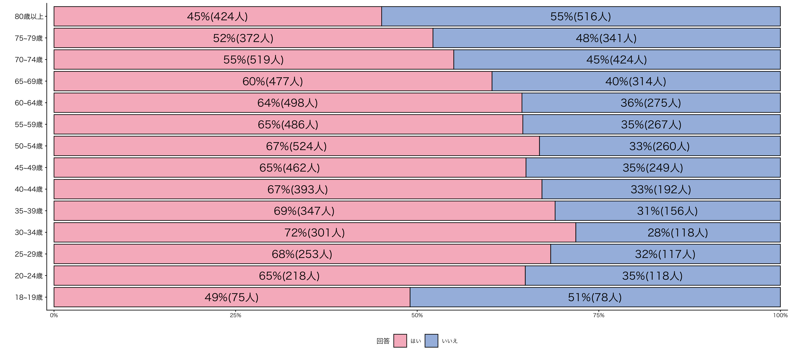
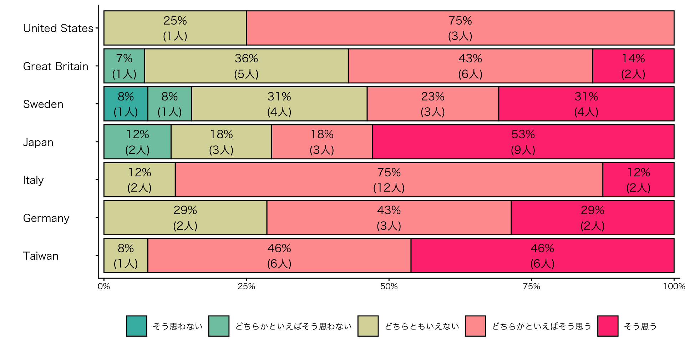
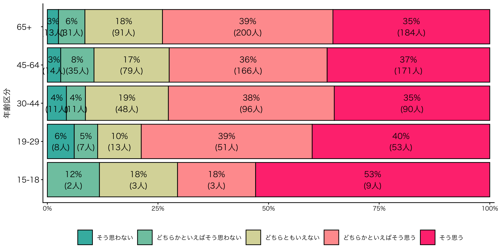
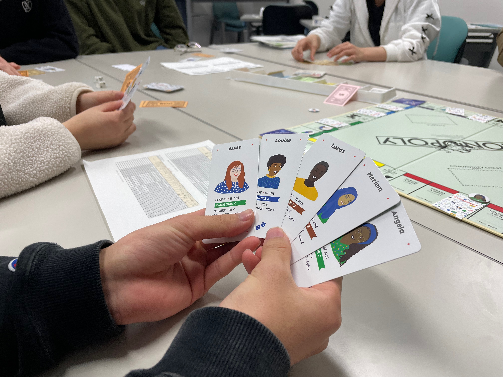
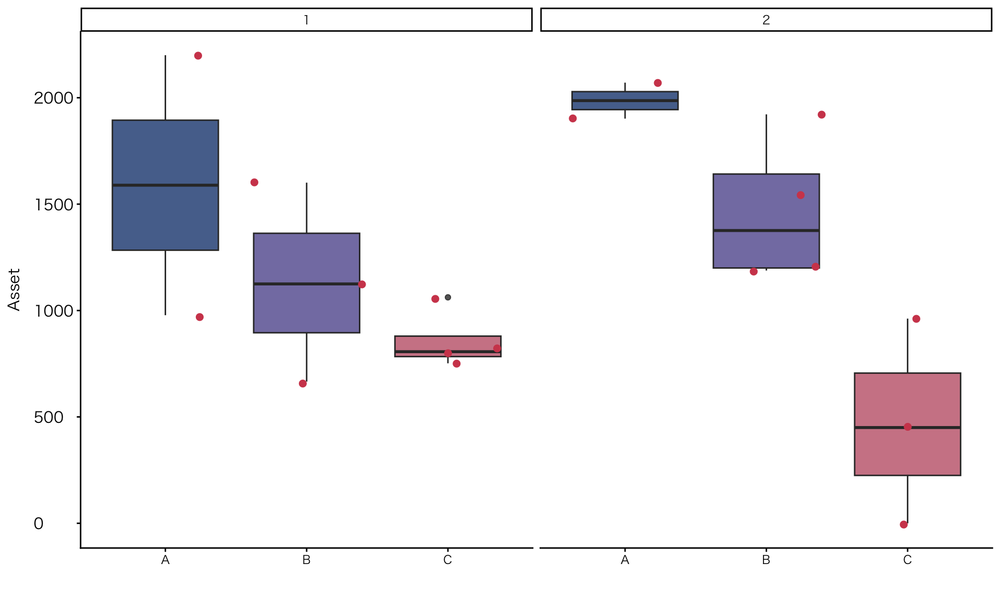

ボードゲームを活用した探究型高大接続プログラム
格差を可視化し、経験する授業実践
![]()
資料
個人研究報告投影資料
個人研究報告レジュメ
イベント当日の教材
Ⅰ. はじめに
はじめに
目的
- 日本のPBL型探究学習の問題点を踏まえ、ボードゲーム「不平等なモノポリー」を活用した高大接続プログラムの実践と知見を紹介し、有効性を検討
はじめに
自己紹介
専門：政治思想史
- 18世紀イギリスの議会政治 / 18世紀におけるレトリック受容史（Grammar School研究を含む）
学位：政策科学
- 問題解決志向の授業形態を日本でいち早く導入した学部で学位を得る
- ハーバード大学ケネディスクール ケーススタディ/メソッド
- 本報告の隠れた問題意識
- 相関・因果関係の分析を含まない政策提案に何の意味があるのか
- 問題解決志向の授業形態の有効性は、各種ディシプリンの導入に留まるのでは

Ⅱ. 社会的・学術的背景
社会的・学術的背景：高等教育における探究活動
高等教育における探究活動
生徒が社会問題を取り上げ、その解決策を提案
- PBL（Problem-based Learning）
- 「主体的・対話的で深い学び」を実現する方法として高く評価される
「問題解決」という枠組みの問題点
- 扱われる問題の性質を無意識のうちに限定
- 「解決可能であること」が暗黙の前提
- 比較的短期間で改善や提案が可能な課題に焦点が当たりやすい
- 周縁化される対象：
- 構造的・歴史的背景をもつ問題
- 単純な解決を前提にできない複雑な社会課題
- Cf. 過小評価される文献調査（「調べ学習」）
社会的・学術的背景：高等教育における探究活動
社系の探究活動を支援する団体
- 日本青年会議所, 政策甲子園
- 未来教育株式会社, SDGs QUEST みらい甲子園
- 日本政策金融公庫, 高校生ビジネスプラン・グランプリ
- NPOカタリバ, マイプロジェクトアワード
- ベネッセ, ベネッセSTEAMフェスタ
- Sustainable Brands Japan, SB Student Ambassador
社会的・学術的背景：PBL
「問題解決」志向＝PBL？
Parton and Bailey (2008)
- PBLの理論的基盤をカール・ポパーの認識論によって基礎づける
-
学習者が彼らの経験や予測に反する事態に直面することで生じる不安と、そこに起因する「問い」を重視
- PBL = 問い（problem）を起点（base）とする学習
- 学習 = 学習者の理解が形成される過程そのもの
- PBL：批判的思考と親和的
日本のPBL
- 課題解決能力の育成を目的とする学習法と解されている
- Problem-solving-oriented Approach
- Cf. 松下 and 杉山 (2018)
社会的・学術的背景：大阪大学
大学にできることは何か
阪口 (2023)：大阪大学SEEDSプログラムの事例紹介
高校学校等で実施できている活動を単純に高度化するだけでは、敢えて大学が高大接続事業を行う意義が乏しい（阪口 (2023), 21）
体験すること自体、活動すること自体に重きを置くとともに、学びの場で生じる様々なコミュニケーション（阪口 (2023), 21）
社会的・学術的背景：ボードゲーム『DAIGAKU』
萩原 et al. (2025)：ボードゲーム『DAIGAKU』
特に、大学進学を考えている中高生や現役大学生に対しては、近い将来を具体的に思い描いたり、将来直面するかもしれないハプニングやジレンマに備えたりするための教材として活用される場合が多い（萩原 et al. (2025), 72）。
ゲームの中で，他プレイヤーに生じるハプニングに共感したり、時に手助けしたりすることは、ピア・サポートの疑似体験としても位置付けられる（萩原 et al. (2025), 72）。
社会的・学術的背景：『ボードゲームで社会が変わる：遊戯するケアへ』
與那覇 and 小野 (2023)
（小野）だから私はあくまでも「楽しむ」ことが第一で、楽しんだ後に現実への関心が残るようなデザインの方が、ゲームの特性を活かした社会への貢献になると思っています。〔原文改行〕子どもに知育玩具を渡すときも、「これで勉強しなさい！」と言ったらそもそも遊んでもらえないでしょう。「面白いよ」とだけ添えて、純粋な玩具として渡すからはまってくれて、結果として学びが起きるわけです（與那覇 and 小野 (2023), 153）。
社会的・学術的背景
本報告
- これらの先行研究のなかに「不平等なモノポリー」実践の位置付けを探る
Ⅲ. 「不平等なモノポリー」
若年層の経済認識
内閣府世論調査 (2026)
「社会意識に関する世論調査」(2021年〜2025年のデータを集計)
- 経済的なゆとりと見通しが持てない

若年層の経済認識
「18〜19歳」層
- 経済的困難に対する認識が相対的に低い
- 経済格差が経験的に理解されにくい構造をもつ
- 若者の多くがこの点を自らの問題として捉えられていないことを示唆
若年層の社会格差認識（参考値）
ISSP (2022)：15歳から18歳までの回答を抽出
- 次の意見について、あなたはどう思いますか。
- （日本語）日本の所得の格差は大きすぎる

若年層の社会格差認識（参考値）
ISSP (2022)：15歳から18歳までの回答を抽出
- （日本語）かりに日本の社会全体を層に分けて、いちばん下を１、いちばん上を10とした場合、現在のあなたはどのあたりにいると思いますか。

若年層の社会格差認識（参考値）
ISSP (2022)：日本国内の回答を年齢区分で集計
- 日本の所得の格差は大きすぎる

「不平等なモノポリー」
「不平等なモノポリー」
- 開発者：フランスの不平等観測所
- ボードゲーム「モノポリー」を拡張させる追加キット（公式サイト）
- 利用実態：
- フランス：大人・若者向けのワークショップ；小学校の教育現場で活用
- 日本：管見の限り「不平等なモノポリー」の活用事例はない


「不平等なモノポリー」
コンスタンス・モニエ（プロジェクト・ディレクター）
「どうすれば、深刻な格差を伝えつつも、ただ絶望させるのではなく、行動につなげられるのか？」――これが、今あなたの手元にあるこのツールキットを作るきっかけとなった問いでした。社会的正義を求めるならば、私たちの社会に存在する分断を明るみに出さなければなりません。それによって、一部の人々が目を背けたがるような不公平さが浮き彫りになることもあるでしょう。例えば、裕福な人と貧しい人の間にある圧倒的な格差、今なお根強く残る性差別や人種差別などが挙げられます。しかし、ただ事実を伝えるだけでは、「どうせ何をしても変わらない」という諦めを助長してしまう恐れがあります。特に、すでに多くの困難に直面している人々が「こんなに不平等なら、自分には何の希望もない」と感じてしまえば、問題を解決するどころか、むしろ逆効果になってしまうのです。
「不平等なモノポリー」
コンスタンス・モニエ（プロジェクト・ディレクター）
社会の中での役割に対する固定観念が、不平等を生み出す一因となっています。私たちは、「違う未来もあり得る」ということを伝えたいのです。統計の数字の裏には、実にさまざまな生き方があるということも。そして、私たちは周りから支えを受けることができるということも。みんなで力を合わせれば、社会のルールを変えることだって可能なのです。実際のところ、人は決して一人だけで成功したり、失敗したりするわけではありません。
Cf. ファーガソン，ニーアル and 仙名 (2015)
このゲームを作ったそもそもの動機は、ひと握りの地主が借地人から徴収した地代で儲ける、社会制度の不平等を暴くところにあった。〔略〕現実の世界は辛くても、モノポリーで遊んでいるときは、通りをまるごと買い占める夢さえ見られる。このゲームが教えてくれるのは、最初の考案者が意図した点とはまったく逆で、「不動産を所有するのは賢い」ということだ。持てば持つほど、カネになる。とくに英語圏では、投資するなら家屋に勝るものはないことが、万人の認める真理になった（ファーガソン，ニーアル and 仙名 (2015), 320-322）。
「不平等なモノポリー」：ルール
- 基本的なルールはオリジナル「モノポリー」と同じ
プレイヤーの初期条件
- 人種や性別、障がいの有無などによってプレイヤーは、A群、B群、C群に分類される
- スタート時の資産状況が大きく異なる
- 最初のゲームのプレイヤーは白人フランス人中年


「不平等なモノポリー」：ルール
ゲーム内のルール
- 一タームのうちに振れるサイコロの数：
- A群、B群：2回；C群：1回
- 駅：駅間を瞬時に移動するワープ機能をもつ
- 障がい者は駅を利用できない（独占が進む土地を避けられない）
「不平等なモノポリー」：ルール
38種類のイベントカード
- 格差を広げるカード
- 格差を縮小するカード
- プレイヤーの差別の無自覚性に気づかせるカード
- 人種差別；宗教差別；性差別
- ゲームのルールを変更するカード

あなたにはゲームのバランスを再調整するチャンスがあります！ キャラクター間の差を縮めるために、変更したい不公平なルールをみんなで選んでください。
Ⅳ. 実施概要
実施概要
- イベント名：「ボードゲームで考える社会の平等と不平等」
- 対象：大学進学を志望する高校生を対象
- 実施日（参加人数）
- 2025年3月（9名）
- 2025年12月（9名）
- 遠方の参加者が比較的多い：東京都；新潟県；愛知県；岡山県
1 対面型セミナー。アクティビティやインタラクティブなやりとりを組み込んだセミナーが多い。報告者が実施・または実施予定のセミナに、高大接続リーティングセミナー、シネマダイアログ、本で拓く探究ワークショップがある。この他、参加型裁判演劇「極刑」や「金沢大学教員と学ぶ「能登半島の災害・復興スタディツアー」など
実施概要：構成
グループワーク（ボードゲーム前）
- 不平等だと感じるのはどんなときですか？
- 平等と感じるのはどんなときですか？
- 日本の社会は平等だと思いますか？不平等だと思いますか？それはなぜですか？
ボードゲーム
- 1回目：プライヤーの選択はランダム
- 2回目：1回目にA群だった者はC群、C群はA群に、その他はランダム
- ゲーム終了条件：時間、破産者が一人出た場合のいずれか
実施概要：構成
ミニ講義
- 数字で見る平等と不平等
- 数字からは見えない平等と不平等：日本
- 世界価値観調査
- 政治学者の考える平等と不平等（マイケル・サンデル；ロールズ）
- 社会学者の考える日本の分断（吉川徹『日本の分断』）
グループワーク（ボードゲーム後）
- 日本に置き換えたとき、どのようなプレイヤーを登場させるべきだと思いますか？
- 日本に置き換えたとき、どのようなイベントがあると現代の日本社会を表現できると思いますか？
結果
第2回目（2025年12月）の結果
- 概ねプレイヤーの初期条件がそのまま結果に反映された
- A群は富豪に、C群は貧困者に、B群の中にはA群を上回る者もあり

ボードゲーム時の特徴的な行動
社会の不平等を変える行動
- イベントカード「ゲームのルールを変更する」を引いた際は、障がい者の是正（サイコロを2回振れるように改正）が図られた
格差拡大を防ぐ行動
- A群プレイヤーによって資産の独占が進もうとする際は、他のプレイヤーが団結してそれを阻止する行動が見られた（「絶対、売っちゃダメ」）
Ⅴ. 考察
考察
受講後の主な意見（アンケート回答から）
思ったよりちゃんと不平等で自分はずっと貧困だったけどこんな気持ちになるんだなと思いました。あともうちょっと時間は長い方が良いと思いました。
モノポリーのイベントカードが、社会にある不平等を具体的に提示してくれたお陰で、その後のグループワークでも日本の社会の不平等の例を挙げやすかった。
普段通りプレイしているだけであっても、不平等について深く考えさせられた。今までは不平等は自分から遠い存在だと思っていたが、身近にもあるものであることを知ることができたので、これを機に考えて生きたいと思います。
大きな格差がある状態からでも、なんだかんだ言って身分関係なく助け合うことができて、日本はそのような精神があるのはすごいことだなと思った。
考察
有効性
- 参加者は大学進学を目指す者であり、経済的困窮の当事者とは言い難いものの、経済格差が個人の努力だけではなく、社会的条件のもとで再生産されるものであることを、疑似的にではあるが理解する契機に
課題
- 日本を主題とする議論には手詰まり感
- 盛り上がったトピック
- 地元にイオンがないといった地域格差
- 政治家などの「特権階級」
- 「人種や性別、障がいの有無」のような見えづらい格差は議論の主要な対象にならず
先行研究との関係と今後の課題
先行研究との関係
- PBL: 考えるきっかけにはなったと思えるが、2回のイベントだけでは確定的な評価困難（入学後の追跡調査を要す）
- 学びにおけるコミュニケーション：講義＋グループワークよりも、自然なコミュニケーションが生まれている
- ピア・サポートの疑似体験：疑似体験を通して「階級」内ピア・サポートあり；ゲームの進行をお互いに助け合う
先行研究との関係と今後の課題
今後の課題
- 本実践は「体験とコミュニケーションの場」として一定の意義をもつが、さらなる設計上の工夫が必要
- 時間配分；グループワークのテーマ；ミニ講義の内容
- ➡︎ 体験と理論を往還させる学習過程をどう組み込むか
- ➡︎ ディシプリン（例：社会学）への誘い＝学問の楽しさ、大学で何をどう学ぶのか、など
- Cf. 学力偏差値や（数学の得意不得意に起因する）文系/理系による消極的な大学・学部選択
参考文献
参考文献
ISSP, 2022. International social survey programme: Social inequality v - ISSP 2019. https://doi.org/10.4232/1.14009
Parton, G., Bailey, R., 2008. Problem-based learning: A critical rationalist perspective. London Review of Education 6, (3), 281–292. https://doi.org/10.1080/14748460802528475
ファーガソン，ニーアル, 仙名紀（訳）., 2015. マネーの進化史. 早川書房.
内閣府世論調査, 2026. 社会意識に関する世論調査.
松下佳代., 杉山芳生., 2018. PBL(problem based learning)の多分野展開における変容：三重大学を事例として. 大学教育学会誌 40, (1), 73–82.
與那覇潤., 小野卓也., 2023. ボードゲームで社会が変わる：遊戯するケアへ, 河出新書. 河出書房新社.
萩原広道., 佐藤浩章., 大山牧子., 佐野泰之, 長沼祥太郎., 2025. ボードゲーム型教材「DAIGAKU」の多様な教育活用：高大接統，初年次教育，就職活動. 大学教育学会第47回大会 発表要旨集録 71–72.
阪口篤志., 2023. 高校生向けスクール形式のプログラムから見る高大接続. 大学教育学会誌 45, (2), 19–22. https://doi.org/10.60182/jacuejournal.45.2_19